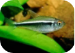
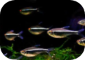

对于帝王灯发色的一些浅见~~
 1327
1327  5
5

1楼 2021-6-25 18:04:26
沙发自己坐！

2楼 2021-6-25 18:35:34
原来帝王灯也这么漂亮啊！这个鱼一般可以长到多少大？
3楼 2021-6-25 19:54:26
一般可以长到5cm，适合60CM++缸体！
泡泡猫：原来帝王灯也这么漂亮啊！这个鱼一般可以长到多少大？
4楼 2021-6-25 20:34:16
帝王灯听说更凶呀，黑灯应该更加适合混养吧。
5楼 2021-6-25 21:23:26
帝王灯领土意识比较强，但是一般在120cm++的缸体中会体现得比较明 显！由于是灯鱼得关系，虽然凶狠，但也只是追逐撕咬，除非是幼鱼，一 般不吃鱼，但吃虾。黑灯体色比较单一，爱跳缸，不推荐。
Hulrooy：帝王灯听说更凶呀，黑灯应该更加适合混养吧。
 收藏(21)
收藏(21) 点赞(48)
点赞(48) 分享(7)
分享(7) 回复(5)
回复(5)